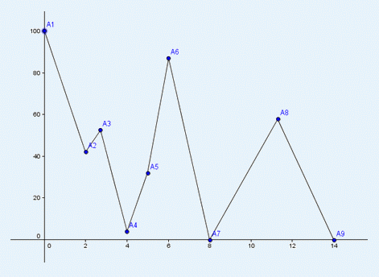

在Pty学校附近，有一座名之为岳之麓的高山。Pty很喜欢和（哔——）一起爬山。
山的平面模型如下：
山由一个顶点集：A1,A2…An给定，保证Ai的x单调递增。我们将Ai和Ai+1之间连上线段，表示山的某一段。如下图所示：

Pty想要爬到这座山的最高的顶点，当两个顶点的高度相同时，我们认为x比较大的顶点要高一些。Pty不是盲人，所以他将会在爬山时采取一些策略，使得他能够尽量快的到达最高的顶点。
Pty从初始的顶点出发，往左右看去，他将朝他能够看到的最高的顶点方向走去。当走到每一个顶点时，他都会重新观察，如果这时看到的顶点比之前看到的顶点还要高，那么他将选择此时看到的顶点走去，直到他到达最高点为止。
例如上图中：Pty从A4点出发。他能够看到的最高点是A6，所以他将会向右侧走去。当他到达A5号点时，能够看到A1点比A6点更高，所以他会调转方向，向左侧走去。由于A1是最高的顶点，所以他将一直往左侧走，直到到达A1为止。
Pty想知道从每一个顶点出发，分别需要走过多少段才能到达最高点。例如上图中从A4出发需要走过5段才能到达最高点。